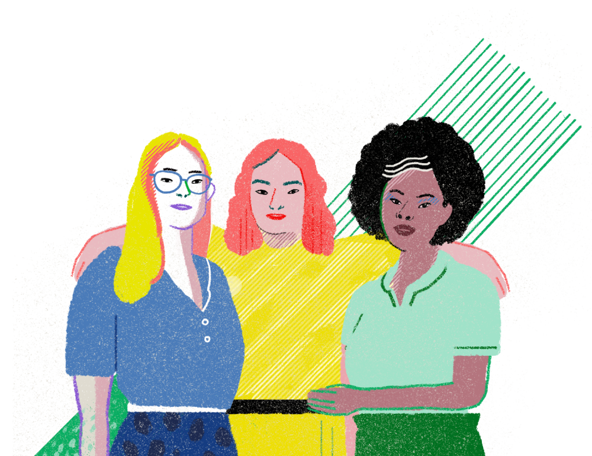

Durante la VIII Cumbre de las Américas (Perú, abril de 2018), las y los líderes de las Américas aprobaron la creación del Task Force Interamericano sobre Liderazgo de las Mujeres, comprometiéndose a promover la igualdad de género y el empoderamiento de las mujeres a través de una mayor cooperación y sinergias entre instituciones que promueven el liderazgo de las mujeres en las Américas y el Caribe.
El mismo está compuesto por trece instituciones interamericanas e internacionales, con reconocida experiencia y programación en las áreas relacionadas con el liderazgo, la participación política y el empoderamiento de las mujeres: la Organización de los Estados Americanos a través de la Comisión Interamericana de Mujeres (CIM) y la Comisión Interamericana de Derechos Humanos (CIDH), la Comisión Económica para América Latina y el Caribe (CEPAL), el Banco Interamericano de Desarrollo (BID), la Organización Pan-americana de la Salud (OPS), ParlAmericas, el Programa de las Naciones Unidas para el Desarrollo (PNUD), la Entidad de las Naciones Unidas para la Igualdad de Género y el Empoderamiento de las Mujeres (ONU Mujeres), CAF-Banco de Desarrollo de América Latina, la Secretaría General Iberoamericana (SEGIB), el Instituto Internacional para la Democracia y la Asistencia Electoral (IDEA Internacional), junto a dos organizaciones de la sociedad civil: Caribbean Women in Leadership (CIWiL) y el Comité de América Latina y el Caribe para la Defensa de los Derechos de las Mujeres (CLADEM)


Es urgente acelerar los esfuerzos para alcanzar la plena y efectiva participación de las mujeres
en los espacios de poder y en la toma de decisiones. Las niñas, las adolescentes y las mujeres de hoy tienen derecho a un presente y un futuro en igualdad en el cual puedan desarrollar su pleno potencial y participar de forma sustantiva en la toma de decisiones.
